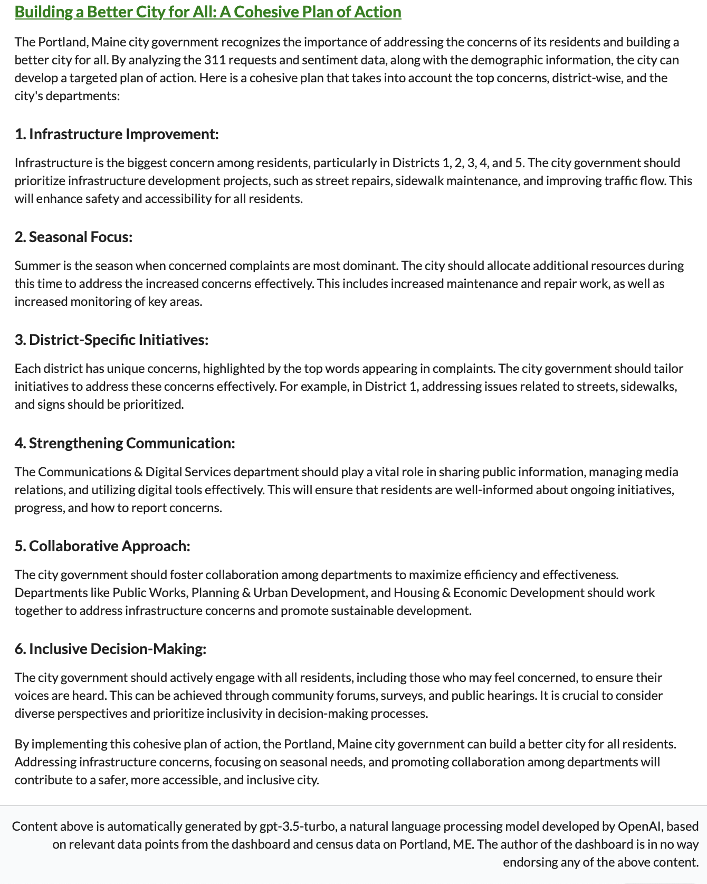

How might data illuminate a city’s pulse? A potent fusion of analytics and insight provides the answer.
In recent weeks, my studies have led me on a fascinating exploration of city dynamics via visualization of a city’s 311 requests as part of my degree coursework on interactive dashboards. While these requests span an array of non-urgent matters, from infrastructure to disputes, they paint a partial picture of a city’s heartbeat. Even though this data is relatively limited, it exemplifies how a larger dataset could offer profound insights into the ebb and flow of urban life.
For those curious, my final output is accessible on shinyapps: Pulse of Portland. Dive deeper into the process by reading on.
Initially, I hoped to identify how cities use data to propel their improvement. Jane Wiseman’s insightful article “Customer-Driven Government: How to Listen, Learn, and Leverage Data for Service Delivery” became a riveting resource. A couple of examples:
Kansas City, Missouri. Here, each 311 interaction translates into a data point reflecting the city’s service quality. Faced with low satisfaction rates on snow removal, the city initiated a media campaign to manage expectations and provide real-time updates using GPS data for snowplows.
Santa Monica, California. They’ve launched the forward-thinking Wellbeing Index, which aggregates survey, administrative, and social media data into a comprehensive local index for improving citizen welfare.
As we segue into the design considerations for my city dashboard concept, these case studies ground our comprehension of data’s potential to disclose the inner workings of a city.
To structure the dashboard, I adopted tools like Shiny and Rhino. Rhino is an R package, adept at crafting high-quality, enterprise-grade Shiny applications.
Designing it, I aimed to animate a triad of interconnected elements:
Sentiment Analysis: I wanted to understand the feelings and experiences of Portland residents. I conducted sentiment analysis on the complaints and categorized them to map the sentiment landscape of the city.
Word Frequencies and District Segmentation: I linked the sentiments to the specific words used in the complaints, revealing themes across districts. This led to a closer look at the narratives within each district, underlining predominant issues within each sentiment category and district.
Supporting these insights were interactive visualizations depicting trends through time and space, incorporating a geospatial map constructed with Leaflet showing actual complaints and a seasonal, yearly heat map of complaint counts.

No groundbreaking revelations here. However, following simple advice like “clean up the streets” could potentially uplift resident satisfaction significantly.
Data is a knowledge seed, yet it requires cultivation to be useful. This project testifies to visualization’s potency and its capacity to decode the complex dance of a city. It validates that even a limited dataset and a strict timeline can reveal significant insights into a city and its inhabitants. The Pulse of Portland dashboard embodies this idea, serving as a concrete proof-of-concept bringing us a step closer to grasping a city’s rhythm.